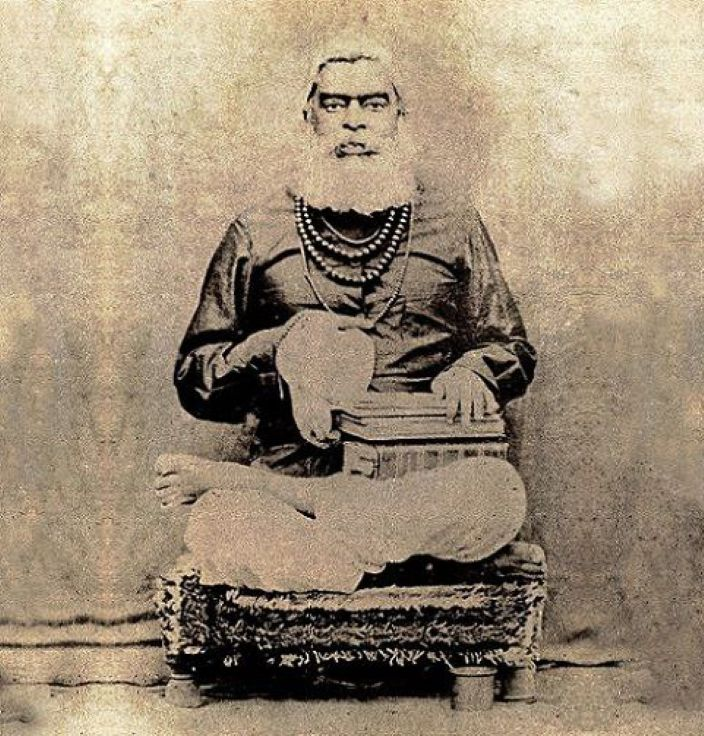

History Of Srīla Bhaktivinoda Thākura

Bhaktivinoda Thākura was born as Kedārnātha Datta in 1838 AD on the 2nd of September in the Ulā village of the Nadiyā district. Ulā grāma was his maternal uncle's place; he was born there, but his paternal house was in Orissa. His father's name was Ananda Chandra Datta, and his grandfather was Raja Vallabha Datta. His mother, Jagat Mohini, was the daughter of Ishvara Chandra Mustaufi. At that time, it was a district of Cuttack; now, it is in the district of Kendrapara near the river Birupa. The name of the village is Chhoti Mangalpur.
Bhaktivinoda Thākur's Grandfather Raja Vallabha Datta was a mahātmā. One day, he told Bhaktivinoda Thākura, “At the age of twenty-seven, you will get a very respectable government job, and I bless you that you will become a great Vaishnava.”
~ HH Gour Govinda Swāmi
Booklet : Srīla Saccidananda Bhaktivinoda Thākura
Publication : Taptajivanam